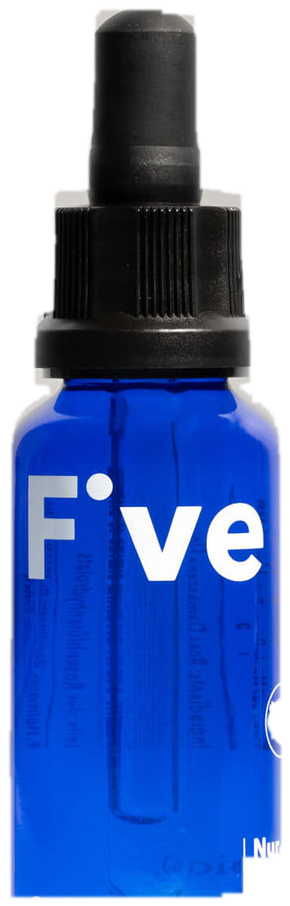
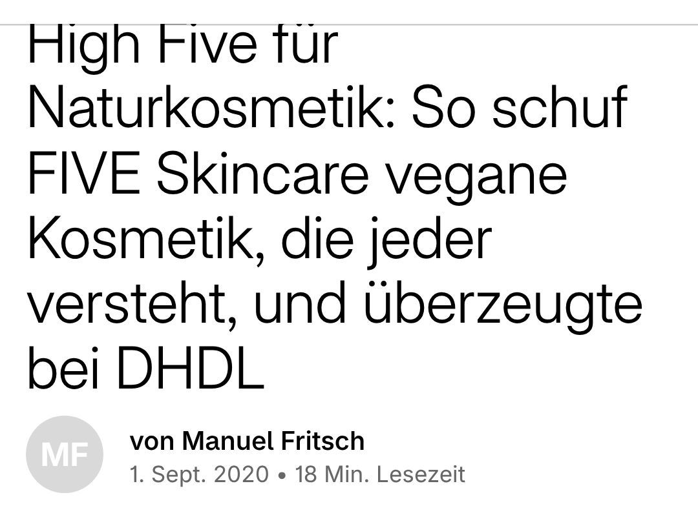

Kosmetik
mehr Inhaltsstoffe?
Marken-Story · fiveskincare.de
Die Marke setzt auf
Inhaltsstoffe pro Produkt
Der Name
Der Name ist das Versprechen
Die Gründerin
Hautpflege, die man versteht
Anna Pfeiffer
Mit dieser Positionierung
TV-Show „Die Höhle der Löwen“
später bekannt
Shopify-Interview · 1. Sept. 2020
nach der Show
Spannender als der TV-Auftritt
TV-Auftritt?
In deiner Produktkategorie
Warum ausgerechnet du?
unzählige Angebote
Tipp 1
Sonst zu kompliziert
dein USP
Tipp 2 · dein USP im Shop
Nicht erst ganz unten bei „Über uns“
Dort, wo Kunden das Produkt sehen
Tipp 3 · ein gutes Versprechen
Sonst enttäuschte Kunden
das Versprechen
Bei Pflegeprodukten
Inhaltsstoffe
Formulierungen fürs Markenversprechen
Aber stimmt das Versprechen?
Von E-Commerce-Shops und Marken
Learnings&Tipps
Beispiel FIVE Shea Cream · laut Shop
Erst der Name, dann der Text

Verstehen, was drin ist
Erst positioniert, dann bekannt
Quelle · Shopify-Blog, Interview 1. Sept. 2020

Historischer Stand
1. Sept. 2020
Interview mit Gründerin Anna Pfeiffer
Vor dem TV-Auftritt
Tipp 1 · USP in einem Satz
Tipp 2 · USP im Shop sichtbar
Tipp 3 · Versprechen einlösen
Beispiel FIVE · Inhaltsstoffe auf dem Tiegel
KI-Textvergleich · nur Beispiele
Das Learning von FIVE